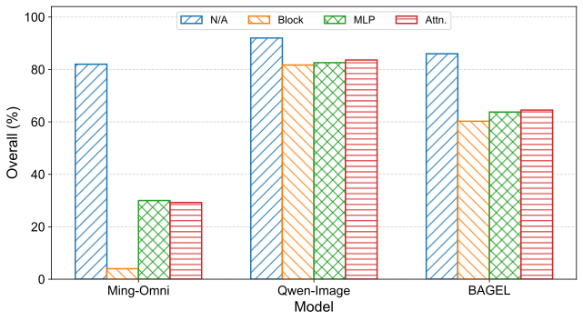
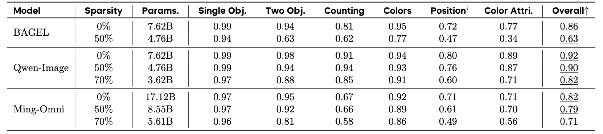
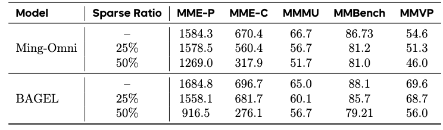
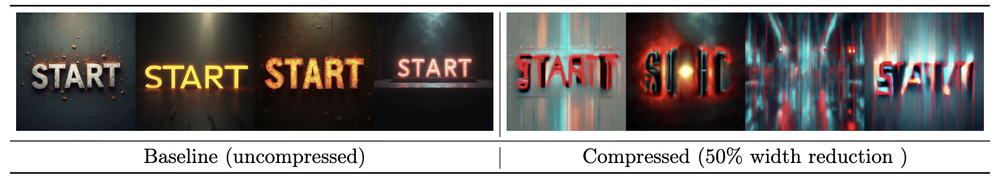
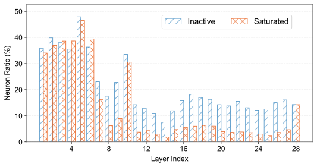
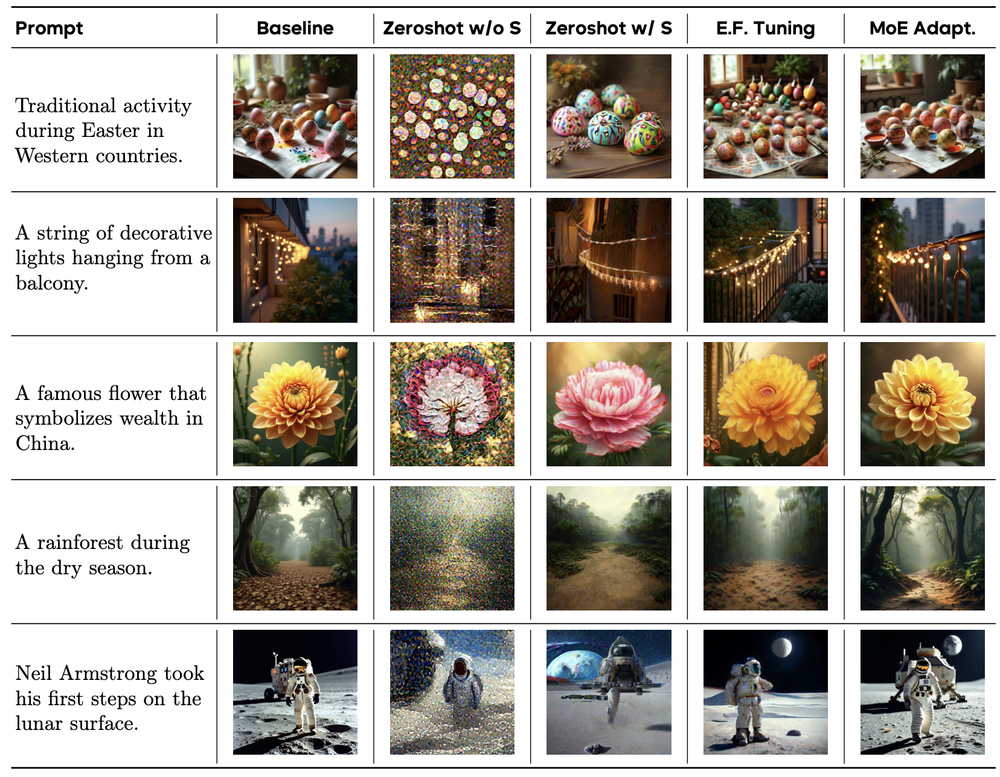

Motivation
Unified multimodal models do not have uniform redundancy.
Understanding and generation share one system but stress different components. We use training-free pruning as a probe to reveal which components are compressible, which are fragile, and where sparse activation can help.
Evidence
Pruning exposes an asymmetric compression landscape.
Depth and width reduction show that unified models are not uniformly compressible across understanding and generation components.




Method
Dynamic sparsity motivates MoE adaptation.
Training-free analysis identifies static redundancy; sparse MoE adaptation uses sample-dependent activation to recover generation quality with fewer active parameters.
Training-Free Component Analysis
Depth pruning and width reduction probe how much each component can be compressed across understanding and generation regimes.
Sparse MoE Adaptation
The generation module is partitioned into experts and sparsely activated, enabling dynamic routing while preserving generation quality.


Resources
MoE adaptation checkpoints are available on Hugging Face.
The released checkpoints activate half of the generation experts at inference time.
| Model | Experts | Hugging Face |
|---|---|---|
| BAGEL-MoE-7B-GEN-16to8 | 16 total, 8 active | LLM-Drop/BAGEL-MoE-7B-GEN-16to8 |
| BAGEL-MoE-7B-GEN-32to16 | 32 total, 16 active | LLM-Drop/BAGEL-MoE-7B-GEN-32to16 |
Citation
Cite this work.
If this project helps your research, please cite the paper.
@misc{he2025understandingharnessingsparsityunified,
title={Understanding and Harnessing Sparsity in Unified Multimodal Models},
author={Shwai He and Chaorui Deng and Ang Li and Shen Yan},
year={2025},
eprint={2512.02351},
archivePrefix={arXiv},
primaryClass={cs.CV},
url={https://arxiv.org/abs/2512.02351},
}